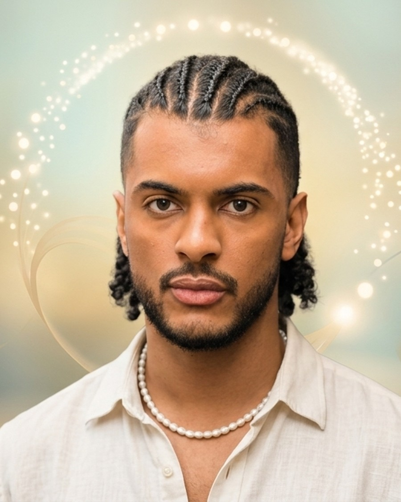

UX Design, meditação e cuidado humano.
Sou o Lucas Nunes — estudante de UX Design e criador do NeuroMedit. Desenho interfaces, sessões e atendimentos com o mesmo princípio: reduzir ruído para devolver presença.
Aberto a colaborar em UX/UI, front-end e produtos centrados em pessoas
Lisboa, Portugal
Reduzir ruído para devolver presença
Caso 01 · NeuroMeditA maioria dos apps de meditação pede pra você relaxar — e te sobrecarrega de escolhas antes disso. Bibliotecas de conteúdo exigem decisão, sistemas visuais competem por atenção, e a primeira tarefa nunca é meditar: é escolher, filtrar, comparar. Para quem chega esgotado, isso é o oposto de alívio.
Pesquisa
Comparei a entrada de apps como Calm e Headspace: mesmo com ótimo acabamento visual, ainda pedem navegação e decisão antes da primeira respiração guiada.
Abordagem
Tratei o momento antes da meditação como parte da meditação. A respiração virou transição de interface, não decoração — uma "eclusa" (airlock) entre o modo de navegar e o modo de praticar.
Meu papel
Pesquisa, roteiro, sistema visual (o símbolo da onda respiratória) e front-end — sozinho, da primeira gravação no telemóvel ao produto no ar.
O fluxo, em sete passos
- Calma pode ser desenhada estruturalmente, não só visualmente.
- Sobrecarga cognitiva aumenta resistência, mesmo quando a intenção é boa.
- Simplicidade não é vazio — é clareza.
Resultado: um produto ao vivo, com sessões guiadas reais e sistema visual próprio.
Hospitalidade como pesquisa de usuário
Caso 02 · HospitalidadeContexto
Anos de balcão em Lisboa e no Brasil, ao lado de colegas de Cabo Verde, Moçambique e Angola. Clientes de passagem, poucos segundos para criar confiança.
Abordagem
Aprendi a ler sinais rápido: tom de voz, postura, o que a pessoa não disse. Cada atendimento virou um pequeno estudo de comportamento — o mesmo instinto que hoje aplico em pesquisa de usuário.
Meu papel
Atendimento direto ao cliente, em dois idiomas, em ambientes de alto volume e pouca margem de erro.
Resultado: visitantes que viravam regulares — e a base do meu olhar como designer.
Design com baixa carga cognitiva
Caso 03 · UX DesignContexto
Entrei na faculdade de UX Design depois de anos de programação e atendimento. Queria unir as duas coisas: lógica de sistema e leitura humana.
Abordagem
Uma decisão por tela, hierarquia clara, texto que não exige esforço. Este princípio guiou o roteiro do NeuroMedit e guia esta própria página que você está lendo agora.
Meu papel
Pesquisa, wireframe, prototipagem e design de interface — sozinho, do zero ao produto publicado.
Resultado: um método aplicado em tudo o que construo, não só um princípio teórico.
Ver esta página como exemplo ↑Para onde a experiência do usuário vai em 2026
Caso 04 · Pesquisa própriaAntes de continuar desenhando, parei para pesquisar a fundo: onde o dedo alcança melhor no mobile, para onde o olho vai primeiro no desktop, que forma de botão converte mais, e o que realmente muda para quem navega com leitor de tela. Depois apliquei cada achado nesta própria página — e auditei o NeuroMedit com a mesma régua.
Pesquisa
Zona de alcance do polegar em mobile, padrões de leitura em F e Z no desktop, forma de botão e conversão, e as regras de acessibilidade da WCAG 2.2 / European Accessibility Act.
Abordagem
Nada de opinião solta: medi o contraste real das cores do meu portfólio e do NeuroMedit pela fórmula oficial do WCAG antes de mudar qualquer coisa — e encontrei falhas reais nos dois.
Meu papel
Pesquisa, cálculo de contraste, escrita do estudo e implementação das correções — nos dois produtos, com aprovação antes de tocar o NeuroMedit em produção.
Resultado: 12 correções de contraste aplicadas em produção, mais CTA de polegar, skip-link e alvos de toque no meu portfólio.
Ler o estudo completo →Do Rio São Francisco a Lisboa
Nasci em Paulo Afonso, Bahia, à beira do rio. Aos 16, pagava minha própria escola de espanhol trabalhando numa biblioteca — e já meditava todas as manhãs.
Em 2022 atravessei o Brasil de ônibus e depois o Atlântico, e recomecei em Lisboa com 800€. Hoje sou estudante de UX Design, voluntário num centro de yoga, e sigo guiando meditações — agora para muito mais gente do que imaginava.
Se o meu caminho fez sentido pra você, escreva.
Respondo pessoalmente — sobre um projeto, uma vaga, uma meditação ou só para trocar uma ideia.
Aberto a colaborar em UX/UI, front-end e produtos centrados em pessoas